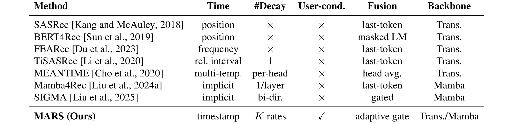
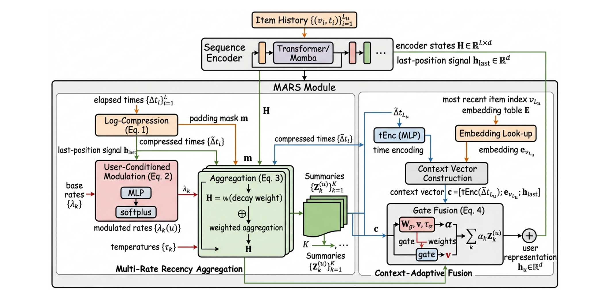
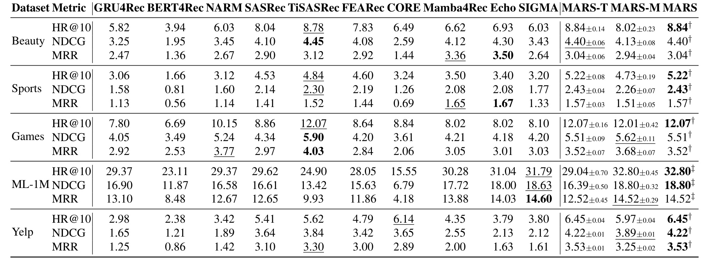
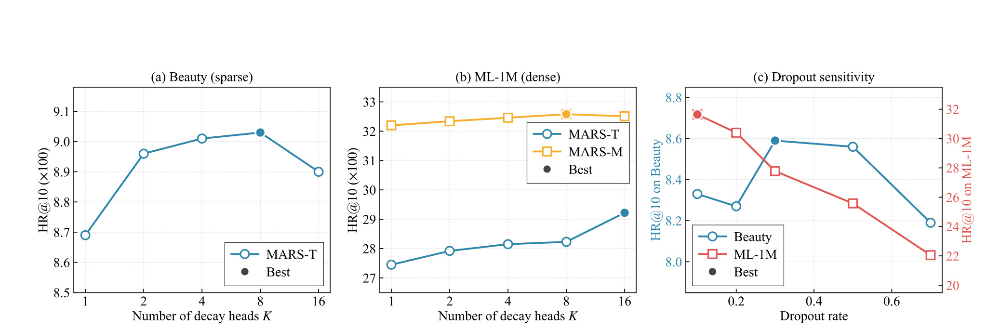
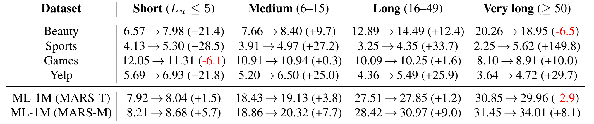

MARS 这篇论文的唯一论文入口是 arXiv:2606.03718，标题为 “MARS: Multi-rate Aggregation of Recency Signals for Sequential Recommendation across Sparse and Dense Regimes”。作者是 Zhenyu Yu 和 Shuigeng Zhou，一作与通讯作者单位均来自 Fudan University，论文把主类别放在推荐算法而不是通用大模型，因为它解决的是 sequential recommendation 中用户历史的时间聚合问题。代码/项目页状态：PDF 摘要页写明 code included in supplementary material，本轮没有核验到独立公开仓库，因此不额外生成代码链接。公开时间按 PDF 与 arXiv 元信息记为 2026-06-02。
1. 背景和问题
Sequential recommendation 的标准任务看起来很直接：给定用户按时间排序的交互历史，预测下一次最可能交互的 item。但 MARS 认为，当前主流模型在“怎样使用时间”这件事上有一个结构性耦合。Transformer 系列模型通常把位置编码、相对时间 bias 或 attention score 当成时间线索；Mamba/SSM 系列模型则把近期性隐藏在状态转移和选择性扫描里。它们都可能有效，却都把两件事绑在同一个模块里：一是 sequence encoder 负责 item 内容和顺序模式的混合，二是 aggregation 负责把每个位置的 hidden state 汇总成最终用户向量。论文的核心判断是，这两件事在系统接口上应该解耦。encoder 可以继续学习 item-to-item 依赖，aggregation 则单独消费真实 timestamp，用多个衰减速度表达用户兴趣在分钟、天、月等不同尺度上的变化。
这个问题在稀疏和稠密行为数据里表现不同。Beauty、Sports、Games、Yelp 这类公开数据的平均历史长度只有 8 到 13 左右，用户每次行为之间的时间跨度和兴趣突变更可能决定下一次点击；如果只依赖 ordinal position，模型知道“这是倒数第几个 item”，却不知道两个 item 相隔 5 分钟还是 5 个月。ML-1M 的平均历史长度达到 165.5，序列很长，Transformer attention 或 Mamba state 本身已经能从大量近邻行为里提取近期性，此时再叠一个强 recency prior 可能收益变小，甚至与 encoder 已学到的近期性重复。因此 MARS 不是简单提出“时间越显式越好”，而是把问题拆成两个 regime：短历史稀疏场景需要外显的多速率聚合，长历史稠密场景需要与 Mamba 这类线性状态模型配合，避免在 Transformer 上重复堆叠同一种近期性假设。
Table 1 是论文用来定义差异的关键入口。它不是普通 related work 表，而是把 sequential recommender 拆成 Time、#Decay、User-conditioned、Fusion、Backbone 五个设计轴。SASRec 和 BERT4Rec 主要依赖 position；TiSASRec 进入相对时间间隔，但只有一个全局时间参数化；MEANTIME 有多时间 head，却没有用户条件化；Mamba4Rec 和 SIGMA 的时间衰减是 state-space 机制中的 implicit effect。MARS 的行同时出现 timestamp、K rates、用户条件化、adaptive gate 和 Transformer/Mamba 两类 backbone，这说明它不是替换 encoder，而是在 encoder 之后加一个 post-encoder aggregation operator。

这张表需要放在背景章，是因为它把论文的“新问题”说清楚了：MARS 要解决的不是“再造一个 SASRec 变体”，也不是“把 Mamba 移植到推荐系统”，而是把时间感知聚合从 sequence encoder 中抽出来，变成可以横跨 Transformer 与 Mamba 的独立模块。读表时最重要的是最后三列。User-cond. 表示不同用户可以拥有不同近期性尺度；Fusion 表示模型不是预设某个 head 或最后一个 token，而是由 gate 决定怎样混合多个时间摘要；Backbone 表示同一个聚合思想可以接在 Transformer 或 Mamba 后面。换到业务系统语言，这相当于把用户历史表里的 timestamp 变成召回/排序模型显式可学习的输入，而不是只让 embedding 序列的相对位置间接携带时间信息。它也解释了为什么论文后面要反复讨论 sparse/dense regime：如果历史短，显式 timestamp 能补 encoder 的信息缺口；如果历史长，encoder 自己已经有强近期性归纳偏置，aggregation 的作用就要重新分配。
MARS 的问题意识还有一个重要边界：它不声称用户兴趣一定服从单一指数衰减。真实用户的兴趣可能有会话级短期兴趣、类目级中期偏好和长期稳定偏好，一个 decay rate 很难同时表达这些尺度。MARS 选择 K 个 exponential heads，是为了让不同 head 关注不同 recency scales，再用 gate 按用户上下文混合。这个选择既保留了指数核计算便宜、可微、可解释的好处，又通过 mixture 避免单衰减模型过窄。论文的 theoretical section 也围绕这一点展开：指数混合可以逼近任意单调衰减核；如果用户行为可近似为多指数 Hawkes process，带 diversity regularizer 的多个 head 有机会恢复不同真实衰减率。这里的理论并不等于业务真实分布一定是 Hawkes，而是给“为什么多速率头不是任意堆参数”提供了结构理由。
因此，MARS 的背景价值可以概括成一句话：它把 sequential recommendation 里的时间建模从 encoder 内部的 implicit bias，改造成一个可插拔、可分析、可按数据密度选择 backbone 的 aggregation layer。这个设计对短历史推荐、近期兴趣漂移、跨域行为稀疏和多节奏消费场景尤其有意义；但它也要求数据中保留可靠 timestamp，要求离线切分能反映真实时间顺序，并且要求线上服务能接受额外 K 个聚合 head 的延迟和显存开销。论文后面的实验正是围绕这三个问题展开：是否提升主指标、哪些组件贡献最大、在不同历史长度和不同计算预算下是否仍然划算。
2. 方法
2.1 问题定义和解耦思路
论文从标准 sequential recommendation 形式化开始。用户集合为 U，物品集合为 V，某个用户 u 的交互历史写成 Su = {(vi, ti)} 从 i=1 到 Lu，其中 vi 是第 i 个交互 item，ti 是 UNIX timestamp，Lu 是用户历史长度。模型输入会被 padding 或 truncation 到固定最大长度 L，目标是在候选 item 集合 V 上给下一次交互 vLu+1 排序。这里有几个符号决定了后续方法的形状：H = [h1, ..., hL] 是 encoder 输出的 hidden states；∆ti = tLu - ti 是第 i 个历史行为到最近一次行为之间的 elapsed time；m 是 padding mask；hlast 是最后一个非 padding 位置的 hidden state。传统 SASRec 风格模型通常直接使用 hlast 或 attention readout 得到用户向量，而 MARS 把 H 和 ∆t 一起送入一个额外 aggregation module。
这个解耦有两个工程含义。第一，MARS 不要求重新设计 item embedding、negative sampling、loss interface 或 downstream scorer。encoder 仍然把 item 序列编码成 H，最终输出仍然是一个用户向量 hu，用它和 item embedding 做 compatibility scoring。第二，MARS 的时间建模位置很明确：它只在 H 之后、prediction 之前做聚合。这样做避免了把真实 timestamp 深度混入每层 attention 或 state transition，降低了迁移成本。已有 SASRec pipeline 可以接 MARS-T，已有 Mamba4Rec pipeline 可以接 MARS-M；差别主要是选哪个 encoder 产生 H，以及平均序列长度是否触发 sparse/dense 版本切换。
如果把方法读成数据流，MARS 的输入是三类信息：encoder hidden states H，真实时间间隔 ∆t，最后一次行为及其上下文 hlast。输出是 hu。中间分三步：先把每个历史位置按 K 个衰减头聚合成 K 个 summary Zk；再用 context-adaptive gate 给 K 个 summary 分配权重；最后把加权 summary residual add 到 hlast 上。这条链路的关键是，K 个 head 的差异来自可学习 decay rate 和用户条件化，而不是普通 multi-head attention 那种只在投影矩阵上分头。
2.2 Multi-Rate Recency Aggregation
MARS 首先处理真实时间间隔。由于原始 timestamp 差值可能以秒为单位，跨度从分钟到月，直接输入指数函数会让数值范围过大。因此论文先做 log compression：
符号解释：$\Delta t_i$ 是第 $i$ 个历史行为到最新行为的真实时间差，$\tau_0$ 固定为一小时，$\tilde{\Delta t_i}$ 是压缩后的时间差。这个式子的作用不是学习时间编码，而是把不同量级的时间间隔压到更稳定的范围，让后面的 exponential decay 更容易优化。使用最新行为作为 reference point，也意味着 MARS 聚合的是“相对当前预测时刻的近期性”，而不是绝对日历时间。
接下来，每个 decay head k 有一个 base rate $\lambda_k$ 和 temperature $\tau_k$。base rate 通过 softplus 保证非负，并用从 -1 到 +2 的 linspace 初始化 unconstrained parameter，让不同 head 初始时已经覆盖不同时间尺度。然后论文引入用户条件化 modulation：
符号解释：$\lambda_k$ 是第 $k$ 个全局基础衰减率，$W_\lambda h_{last}$ 用当前用户序列最后状态产生 K 维调制信号，$\sigma=0.5$ 限制调制幅度，$\lambda_k(u)$ 是用户 u 上实际使用的衰减率。这里没有给每个用户存参数，因此不会引入用户级参数表；用户差异只来自 hlast 经过小 MLP 后对全局 head rate 的乘性调制。零初始化最后一层使训练开始时 $\lambda_k(u)=\lambda_k$，避免模型一开始就因为用户调制过强而不稳定。
有了用户条件化衰减率，MARS 对每个 head 在时间维度上做 softmax：
符号解释：$w^{(u)}_{k,i}$ 是用户 u 的第 k 个衰减头分配给第 i 个历史位置的权重，$m_i$ 用于屏蔽 padding，$h_i$ 是 encoder 输出的第 i 个 hidden state，$Z^{(u)}_k$ 是第 k 个 recency-conditioned summary。这个式子是 MARS 的核心：它不重新计算 item-to-item attention，而是在已经得到的 H 上，按真实 elapsed time 重新加权。矩阵形式为 $Z=wH$，因此额外开销是 $O(LdK)$，当 K 远小于 L 时，比在每层 attention 里引入复杂时间 bias 更便宜。

Figure 1 展示了这条数据流。左侧 sequence encoder 先输出 H；中间 MARS module 用 K 个 learnable rates 形成 multi-rate aggregation；上方 user-conditioned modulation 根据 hlast 调整每个用户的 decay；右侧 context-adaptive gate 把 K 个 summaries 融合为最终 hu；底部则连到 auxiliary losses 和 prediction。图中最值得注意的是 residual add：hu 不是完全替代 hlast，而是 hlast 加上 gate 后的 recency summaries。这让 MARS 在退化情况下可以接近原始 encoder readout，降低了把聚合模块插入已有模型时的风险。另一个细节是 K 个 summary 都来自同一个 H，这意味着 MARS 不是训练 K 个独立 encoder，而是用很轻的 post-encoder operator 从同一组 hidden states 中提取不同时间尺度。因此论文才能声称它至多增加 6% 参数，并且对 Transformer/Mamba 都保持 encoder-agnostic。
从直觉上看，较大的 $\lambda_k(u)$ 会让 head 更关注近期行为，较小的 $\lambda_k(u)$ 会保留更远历史。用户条件化之后，同一个 head 在不同用户上也能略微改变时间尺度。例如一个用户的消费行为高度季节性，长期偏好重要，gate 可能给慢衰减 head 更大权重；另一个用户最近会话意图强，快衰减 head 会更重要。MARS 没有显式标注“短期兴趣”或“长期兴趣”，但通过 K 个 exponential kernels 和用户上下文 gate，把这些概念变成可学习的连续参数。
2.3 Context-Adaptive Fusion
Multi-rate aggregation 得到的是 K 个 summary，但最终推荐系统通常只需要一个用户向量。MARS 用 context-adaptive gate 做融合。上下文向量 c 由三部分拼接：最近 elapsed time 的 time encoder 输出、最新 item embedding，以及 hlast。然后每个 summary Zk 与 c 拼接后经过 tanh MLP 得到 gate logit gk，再做 softmax：
符号解释：$g_k$ 是第 k 个 summary 的融合打分，$\alpha_k$ 是 gate 权重，$\tau_\alpha$ 是 gate temperature，$h_u$ 是最终用户表示。这里的 c 让 gate 不只看 Zk 本身，还看最近一次行为、最近时间间隔和 encoder 的 last-position state。也就是说，MARS 可以根据当前上下文选择“更像会话意图”的快头，或者“更像长期偏好”的慢头。
这个 gate 与普通平均或固定加权不同。固定平均假设所有用户、所有预测时刻都需要同样的时间尺度组合；MARS 则把 fusion 变成 per-user decision。与 MoE 类 gate 类似，MARS 也需要防止所有样本都路由到同一个 head，所以后面会加 load-balance term。但它和稀疏 MoE 不同：这里不是选择大专家网络，而是在 K 个低成本 recency summaries 之间连续混合。因此 gate 的主要作用是解释性和适配性，不是扩大模型容量。
Residual 设计也值得单独看。$h_u=h_{last}+\sum_k\alpha_k Z_k$ 意味着 MARS 保留 encoder 已经学到的最后位置表示，额外加入多速率时间聚合。对 SASRec 来说，hlast 包含 causal attention 后的序列信息；对 Mamba 来说，hlast 包含 selective state 的序列压缩。MARS 不试图否定这些 encoder，而是补一个“真实时间维度上的重新读出”。这也是为什么论文能比较 MARS-T 和 MARS-M：同样的 aggregation operator 在不同 encoder 上的边际收益不同，从而反映数据密度和 encoder 近期性能力的互动。
2.4 优化项和理论支撑
训练目标由标准 sequential cross-entropy 加两个 auxiliary regularizers 组成：
符号解释：$\mathcal{L}{CE}$ 是 next-item prediction 的交叉熵，$\mathcal{L}}$ 是 head attention distributions 之间的 Jensen-Shannon diversity 项，$\mathcal{L{bal}$ 是 gate 权重的 load-balance 项，$\eta$。注意论文把 diversity term 写成负的 pairwise JSD 求和，使优化时鼓励不同 head 的 attention distribution 不要重合；load-balance term 类似 MoE 的均衡约束，避免 gate 永远只用一个 head。}$ 和 $\eta_{bal}$ 默认都是 $10^{-2
这两个 regularizers 对 MARS 很关键。没有 diversity，K 个 head 可能全学成同一个 decay rate，模型表面上有多速率，实际退化成单速率聚合。没有 balance，gate 可能长期偏向一个 summary，即使底层 head 不同，最终 hu 也只使用少数尺度。论文的 Table 4 和附录 A1/A2 都显示，去掉某些组件的影响具有数据集依赖性：Beauty 上真实时间 b1 的贡献更明显，ML-1M 上 load-balance 和 MARS-M 的 diversity 更重要。这说明 MARS 的各项约束不是每个数据集都同等关键，但它们共同维持了“多速率且被使用”的结构。
理论部分有三条。Proposition 1 说 K 个 exponential functions 的混合可以逼近任意单调非增 decay kernel：
符号解释：$\phi(t)$ 是任意单调非增的目标衰减函数，$\alpha_k$ 是混合权重，$\lambda_k$ 是指数衰减率，$\epsilon$ 是逼近误差。这个命题支持了“多指数 mixture 足够表达复杂近期性”的选择。它不是说真实兴趣一定是指数衰减，而是说只要目标近期性是单调衰减，足够多的指数核可以近似它。MARS 的 gate 权重对应 mixture weights，用户条件化的 $\lambda_k(u)$ 对应可变 rates。
Proposition 2 给出复杂度：aggregation 是 $wH$，时间复杂度 $O(LdK)$，额外内存 $O(LK+dK)$。这条很重要，因为 sequential recommendation 线上场景通常对 latency 敏感。MARS 把时间建模放在 encoder 之后，不会把 self-attention 的 $O(L^2d)$ 再扩大一层；当 K 取 4 或 8 时，额外成本主要是一次 batch matrix multiplication 和几个小 MLP。
Proposition 3 使用 Hawkes process 解释 decay rates 的可识别性。假设用户行为由 K 个不同 rate 的 exponential excitation kernels 生成，并且 diversity loss 在 optimum 处保持正值，那么学习到的 rates 可以在 population limit 下恢复真实 rates，最多差一个 permutation。这个假设很强，不能直接当作业务数据证明；但它指出了 diversity regularizer 的必要性：如果两个 head collapse 到同一 rate，它们的 attention distribution 相同，JSD 变成 0，多速率表达能力就丢了。论文用这个理论连接了模型结构和 ablation 中的 b3 结果。
2.5 Backbone Selection
MARS 最后给出一个非常简单的 backbone selection rule：根据训练集平均序列长度选择 MARS-T 或 MARS-M。论文写法可以概括为：
符号解释：$D$ 是目标数据集，$\bar{L}$ 是训练集中用户序列的平均长度，50 是论文使用的数据集级阈值。Beauty、Sports、Games、Yelp 的 $\bar{L}$ 在 8 到 13 左右，因此进入 MARS-T；ML-1M 的 $\bar{L}=165.5$，进入 MARS-M。作者强调这个选择只在训练前计算一次，不增加 runtime overhead。
这个 rule 看似粗糙，但与论文的机制解释一致。作者测量了 trained SASRec 的 attention entropy：稀疏数据上 entropy 约 0.75 到 0.87，说明 attention 分布接近均匀，explicit recency prior 能补足近期性；ML-1M 上 entropy 降到 0.43 到 0.51，说明 attention 已经集中到近期尾部，Transformer 上再叠 MARS-T 收益有限。Mamba 的 selective state 本身是线性序列模型，适合长序列高密度 regime；MARS-M 则让 Mamba 的单一隐式衰减扩展成多个可学习 rates。
从工程角度看，这个 threshold 是论文最容易被质疑、也最容易落地复现的地方。容易质疑，是因为真实业务数据不会只有平均长度 8 和 165 两端，中间可能有 30、60、100 的混合场景；容易落地，是因为它不需要训练一个 router，也不需要在线按用户切 backbone。实践中可以先用平均历史长度、attention entropy、近期行为占比和长尾用户比例共同判断 regime，再决定是否采用 MARS-T、MARS-M 或混合服务。MARS 论文没有解决 per-user dynamic backbone selection，但它给出了一个可复现实验起点。
3. 实验结果
3.1 实验设置和密度分层
论文在五个公开 benchmark 上实验：Amazon Beauty、Sports、Games，MovieLens-1M，以及 Yelp。Table 2 显示 Beauty、Sports、Games、Yelp 的平均序列长度分别约为 8.88、8.32、8.60、12.51，稀疏度都接近 99.9%；ML-1M 平均长度是 165.5，稀疏度 95.16%。这组数据不是随便拼的，它构成了 MARS 的核心对照：四个 sparse short-history 数据集检验显式 recency aggregation 是否能补 SASRec 类 encoder 的不足；一个 dense long-history 数据集检验 Mamba backbone 和多速率聚合是否能在长序列中更有效。
基线覆盖 RNN、attention、time-aware Transformer、session model 和 state-space model，包括 GRU4Rec、NARM、BERT4Rec、SASRec、TiSASRec、FEARec、CORE、Mamba4Rec、EchoMamba4Rec 和 SIGMA。论文强调所有 baseline 在同一 RecBole 协议下重训，避免直接引用原论文数字带来的 pipeline confound。Transformer 模型共享 SASRec 配置，Mamba 模型共享 Mamba4Rec 默认配置；MARS 在 sparse 数据上 K=4，在 ML-1M 上 K=8；所有 MARS 配置跑五个随机种子并报告 mean±std。这些设置让主结果更像同一实验台上的横向比较，而不是不同论文数字的拼表。
3.2 主结果：双实例规则是否真的工作
Table 3 是最重要的主结果。MARS 在五个数据集上都拿到 HR@10 最优，但具体获胜方式不同。Beauty、Sports、Games、Yelp 根据 $\bar{L}<50$ 选择 MARS-T；ML-1M 根据 $\bar{L}\ge50$ 选择 MARS-M。论文报告 sparse 数据上 MARS-T 相对最强 content-only Transformer baseline 的平均 HR@10 增益为 +19.7%，Games 达到 +36.2%；相对 TiSASRec 也有 +5.85% HR@10，同时避免 TiSASRec 在长序列上的 $O(L^2)$ 时间和内存压力。ML-1M 上 MARS-M 相对 SIGMA HR@10 +3.2%、NDCG +0.9%，MRR 略低于 SIGMA 但在 seed variance 内。

这张主结果表有两个读法。第一，看每个数据集最后一列 MARS 的标记：† 表示选择 MARS-T，‡ 表示选择 MARS-M。它验证了论文的 dataset-level selection rule 至少在这五个 benchmark 上没有选错：短历史稀疏数据选择 Transformer 加显式 recency prior，长历史 ML-1M 选择 Mamba 加多速率聚合。第二，看 MARS-T 与 MARS-M 在同一数据集上的并列数字。MARS-M 在 Games 和 Yelp 上接近 MARS-T 但不稳定领先，说明 Mamba 不是所有场景的无脑替代；MARS-T 在 ML-1M 上反而弱于 MARS-M，说明 dense regime 下 Transformer 叠加 post-encoder recency aggregation 不一定最佳。对落地来说，Table 3 的价值不是告诉我们某个绝对 HR@10 可以迁移，而是提示 backbone 与时间聚合的组合需要按数据密度选择。如果业务只有短 session、timestamp 稀疏且兴趣漂移快，MARS-T 更值得先试；如果历史很长且线上需要线性复杂度，MARS-M 的 Pareto 位置更有吸引力。
主结果还有一个稳健性信号：MARS 的五种数据集、两个 instantiation 的五 seed 标准差在 HR@10 上大致为 0.04 到 0.70 点。对于推荐系统离线实验来说，这不等于完全排除随机性，但至少说明提升不是单次 seed 偶然峰值。论文没有给线上 A/B，也没有展示跨域泛化，因此主结果只能证明在统一离线协议下有效，不能直接推导线上 CTR、CVR 或长期留存一定改善。
3.3 消融和组件贡献
Table 4 的主文消融聚焦 MARS-T 的 HR@10。Full MARS-T 相对 Backbone-only 在 sparse 数据上有正贡献：Beauty 从 8.53 到 8.91，Sports 从 4.89 到 5.20，Games 从 11.75 到 12.24，Yelp 从 5.36 到 6.40。Yelp 的提升最大，论文解释为 bursty review pattern 更强，多速率结构更有用。但在 ML-1M 上，Backbone-only MARS-T 是 30.33，Full MARS-T 是 29.30，说明 dense 长历史里 Transformer backbone 本身已经学到近期性，额外 MARS-T 会变成冗余甚至干扰。这是作者转向 MARS-M 的直接证据。
组件消融呈现数据集依赖。去掉真实时间 b1 在 Beauty 上从 Full 8.91 降到 8.69，说明真实 timestamp 对这个数据集有明确价值；去掉用户条件化 b2、diversity b3 或 balance b4 在某些 sparse 数据上影响较小，说明短历史场景里一个或少数平滑 decay head 已经能覆盖很多信号。ML-1M 上 b4 从 29.30 降到 28.41，single head 从 29.30 降到 27.45，说明长历史 Transformer 版本如果仍使用 MARS，多个 head 和均衡使用会更关键。附录 A2 对 MARS-M 的 full ablation 更有说服力：在 dense ML-1M 上 Full MARS-M 超过 Backbone-only，去掉 JSD diversity 会造成最大 HR@10 掉点，符合 Proposition 3 关于 head collapse 的解释。
这组消融给我的判断是：MARS 的收益不是来自单个“时间特征”开关，而是来自时间间隔、多个 decay heads、gate 和 backbone selection 的组合。短历史场景下，真实 timestamp 与 post-encoder recency prior 是主增益；长历史场景下，Mamba 的线性状态和多速率 head diversity 更重要。如果复现时只在 SASRec 上加 Eq.3，却不做 MARS-M，也不做 selection rule，很可能复现不到论文声称的 dense regime 优势。
3.4 超参敏感性：K 不是越大越好
Figure 2 检查 K 和 dropout。Beauty 上 MARS-T 从 K=1 到 K=8 逐步改善，但 K=1 已经达到最佳 K=8 结果的 96.2%，说明短历史数据的经验衰减核比较平滑，小 mixture 足够。ML-1M 上 MARS-T 对 K 更敏感，HR@10 从 K=1 的 27.45 到 K=16 的 29.22，跨度 +6.4%；MARS-M 的跨度较小，从 32.20 到 32.58，说明 Mamba selective state 已经内置较强近期性，多速率 head 是补充而不是全部来源。dropout 也随密度变化，Beauty 最优约 0.3，ML-1M 最优约 0.1，较大 dropout 会明显伤害 dense 数据。

这张图需要和 Proposition 1 一起读。理论上，更多指数 head 可以更细地逼近复杂单调衰减核；但实验上，K 的边际收益取决于数据里是否真的存在需要更细分的时间尺度，以及 encoder 是否已经表达了近期性。Beauty 这种短历史场景，K=1 已经能捕获大部分收益，K=4 或 K=8 只是小幅修正。ML-1M 的 MARS-T 对 K 敏感，是因为长历史里可能同时有短期观看惯性、系列偏好、长期类型偏好等多个尺度；但一旦换成 MARS-M，Mamba state 已经吸收部分 recency structure，K 的曲线就变平。对工程调参来说，这意味着不要把 K 当成越大越好的容量旋钮。更合理的流程是先按平均长度和 attention entropy 判断 regime，再在 K=1/2/4/8/16 上做小网格，观察收益是否来自更多 head 还是来自 encoder 本身。dropout 曲线也提醒：稀疏数据需要更强 regularization，稠密数据过强 dropout 会破坏长序列模式。
3.5 效率和服务边界
Table 5 没有作为截图保留，但它的结论对落地很重要。MARS-T 在 Beauty 上相对 SASRec 参数从 878K 到 896K，只增加约 2%；ML-1M 上从 332K 到 350K，增加约 5%。forward MFLOPs 在 Beauty 上 5.05 vs SASRec 5.10，几乎相同；ML-1M 上 20.27 vs 21.83，还略低。原因是 MARS aggregation 主要是一组 $wH$ batched matrix multiplication，不是额外一层 quadratic attention。MARS-M 继承 Mamba backbone 的线性时间优势，在 Beauty 上 MFLOPs 比 SIGMA 低 40%，在 ML-1M 上低 42%，同时在 ML-1M 主指标上更强。
不过效率表也有边界。MARS-M 相对 Mamba4Rec 的参数更多，Beauty 上 937K vs 847K，ML-1M 上 382K vs 291K，主要来自更深的 two-block stack 和聚合模块。wall-clock 上，MARS-T 在 Beauty 上比 SIGMA 快 2.0 倍、比 BERT4Rec 快 6.0 倍；MARS-M 在 ML-1M 上比 SIGMA 快 1.4 倍、比 BERT4Rec 快 2.8 倍。对线上推荐服务来说，这些数字说明 MARS 有进入候选的效率基础，但还不足以证明线上吞吐和 tail latency。真实系统还要考虑 batch size、特征读取、ANN 召回、item scoring 数量、缓存策略和多路召回融合。MARS 的优点是增量模块小，缺点是它需要真实 timestamp 和额外 head 权重计算，必须保证特征链路中 timestamp 质量稳定。
3.6 分组分析：收益来自哪类用户历史
Table 6 按用户训练序列长度 Lu 分桶，回答“平均指标提升是不是只来自某些用户”。Sparse 数据里，Yelp 的相对提升从 short bucket 的 +21.8% 单调增加到 very long bucket 的 +29.7%，这与 multi-rate hypothesis 一致：历史越长，越可能包含多个时间尺度，单一 decay 或 last-token readout 越不够。Sports 的 very long bucket 提升 +149.8%，但论文提醒样本数只有 n=89，需要谨慎。Games 则比较平，说明它的 encoder 可能已经捕获了主要 recency signal。ML-1M 上，MARS-T 在 very long bucket 反而 -2.9%，而 MARS-M 对 Mamba4Rec 在四个 bucket 都有 +5.7% 到 +9.0% 的提升。

这张表是理解 MARS 最有价值的实验之一，因为它把“数据密度”从数据集平均值推进到用户分组。主结果表告诉我们 MARS 在整体上有效，Table 6 则显示收益和用户历史长度、encoder 类型之间存在交互。对 sparse 数据，长历史用户更能暴露多时间尺度，因此 MARS 相对 SASRec 的收益更明显；对 ML-1M，Transformer 版本在很长历史上不占优，Mamba 版本反而持续胜出。这支持论文的 dual-instantiation 设计，也提示业务复现时不要只看全量 HR@10。应该按用户历史长度、最近活跃度、类目切换频率、新老用户、session 间隔等维度分桶，否则可能把“短历史新用户收益”和“长历史重度用户收益”混在一起，误判模型适用边界。Table 6 还说明 MARS 不是简单给所有人加近期权重；它在不同 bucket 上的表现差异，本质上来自用户历史中 temporal heterogeneity 的多少，以及 backbone 自身是否已经编码近期性。
综合实验部分，MARS 的证据链比较完整：Table 2 证明 sparse/dense 分层不是口头设定；Table 3 证明双实例主结果成立；Table 4 和附录 A1/A2 证明 MARS 模块、真实时间、多头 diversity、balance 的贡献具有 regime 差异；Figure 2 证明 K 和 dropout 的最优选择也随 regime 变化；Table 5 给出效率可接受；Table 6 解释收益在用户历史长度上的分布。缺口也很明确：实验都是离线 next-item prediction，没有线上 A/B；baseline 虽然统一重训，但没有覆盖工业级多目标排序、召回-排序联动或实时特征延迟；代码尚未公开成独立仓库，复现仍依赖 supplementary material。论文的结论应理解为“在公开序列推荐 benchmark 上，post-encoder 多速率时间聚合是有证据的设计轴”，而不是“任何推荐系统都应该直接切到 MARS”。
4. 总结
MARS 的主要贡献，是把 sequential recommendation 里的时间建模从 encoder 内部抽象出来，变成一个轻量、可插拔、可按数据密度选择 backbone 的 aggregation operator。它的设计抓住了一个实际问题：用户历史不是只有顺序，没有真实时间；用户兴趣也不是只有一个衰减速度，而是可能同时存在会话级、中期和长期尺度。通过 log-compressed elapsed time、K 个用户调制的 exponential heads、context-adaptive gate、diversity 与 balance regularizers，MARS 给出了一条相对干净的建模路径。它不要求推翻 SASRec 或 Mamba4Rec，而是在 H 之后重读时间维度，这让迁移成本和理论分析都更可控。
我认为这篇论文最值得跟踪的点有三条。第一，post-encoder aggregation 是推荐系统里很实用的接口位置，比在每层 attention 中加时间 bias 更容易接入已有服务。第二，sparse/dense regime 的实验解释比较清楚：短历史数据靠显式 recency prior 补信息，长历史数据更适合 Mamba 加多速率松弛。第三，Table 6 的分桶分析比单一主结果更有业务价值，因为它提示模型收益可能集中在历史异质性更强的用户群体。
局限也需要明确。第一，backbone selection rule 是手工阈值，当前只在平均长度约 8-13 与 165.5 两端验证，中间密度数据是否仍以 50 为界并不确定。第二，Proposition 3 依赖 Hawkes process 和 population optimum，真实业务行为未必满足这些假设，finite-sample SGD 也不保证恢复真实 decay rates。第三，论文只做离线 next-item prediction，没有展示线上目标、多目标排序、曝光反馈循环或长期满意度。第四，MARS 依赖 timestamp 质量；如果日志存在补写、跨端延迟、时区错误或批量导入，真实时间间隔会变成噪声。第五，虽然增量开销小，线上仍要评估 K 个 head 的 batch latency、显存峰值和与候选打分链路的耦合。
后续复现可以按三个层次推进。先做最小复现：在一个短历史数据集上用 SASRec+MARS-T 对比 SASRec 和 TiSASRec，确认 Eq.1-Eq.6 以及 K=4 的收益是否存在。再做机制复现：输出每个 head 的平均 decay rate、gate 权重分布、JSD diversity 和按用户历史长度的分桶指标，判断多速率是否真的被使用。最后做业务映射：把用户历史长度、行为间隔分布、attention entropy 或近期行为占比加入数据体检，决定应该试 MARS-T、MARS-M，还是只把 MARS 当作离线 reranking 特征。对真实推荐系统来说，MARS 的价值不是一个固定模型名，而是提醒我们把 timestamp 从“排序日志里的元数据”升级为“用户表示聚合时的一等信号”。